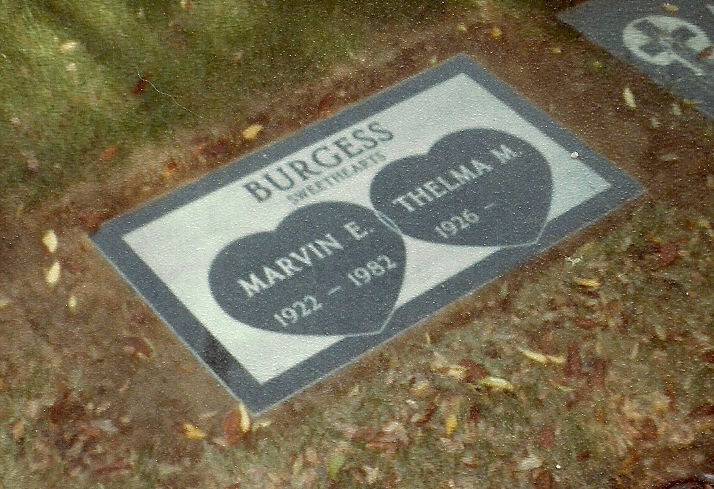
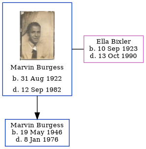

Marvin Eugene Burgess 1922 - 1982
[ Home ] | [ Calendar ] | [ Surnames Index ] | [ Errors ] | [ Family History ]Marvin Burgess, the husband of Ella Louise Bixler (the fifth cousin once-removed on the mother's side of Nigel Horne), was born in Rushville, Rush, Indiana, USA on 31 Aug 19221,2,3,4,5 and married Ella (with whom he had 1 child, Marvin Eugene) in Indianapolis, Marion, Indiana, USA on 27 Dec 1943.
During his life, he was living at his birthplace on 1 Apr 19303 and in Indianapolis on 1 Apr 19404.
He died on 12 Sept 1982 in Huntington Park, Los Angeles, California, USA1,2,5,6,7.
Children
- Marvin Eugene was born on 19 May 1946
Citations
- California, Death Record Index, 1940-1997 - Findmypast
- Social Security Death Index - Findmypast
- US Census 1930 - Findmypast (was age 7 and the son of the head of the household)
- US Census 1940 - Findmypast (was age 17 and the son of the head of the household)
- United States Obituary Notices - Findmypast
- Find A Grave http://www.findagrave.com
- Indiana, Death Certificates, 1899-2011
Media
Marvin Eugene Burgess
Marvin Burgess - Headstone

Marvin Burgess - Headstone
Marvin Eugene Burgess - 2
US Census 1930 - USC/1930/004950641/00251/032
US Census 1940 - USC/1940/1461083016
United States Obituary Notices - US/TRIB/035586183
Social Security Death Index - USBMD/SSDI/311141268
California, Death Record Index, 1940-1997 - US/MCV/786204/13074547909460145459
Family Tree
Map
Generated by ged2site. Last updated on Jul 3, 2024
Known Issues
Marriage date (27 Dec 1943) has no citations